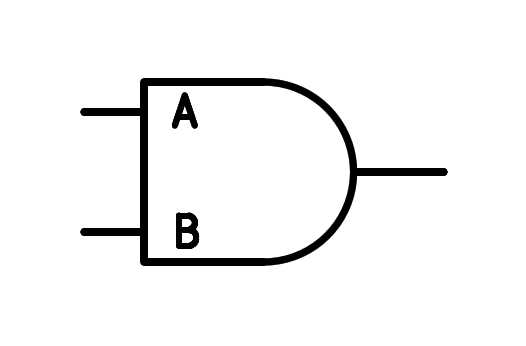
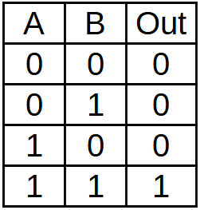
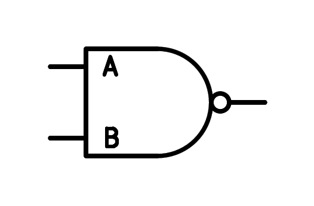
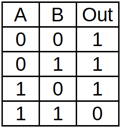

7. La lògica i¶
Les entrades i més o més i una porta de sortida.
La sortida té un valor lògic elevat (1) si totes les seves entrades tenen un valor lògic elevat (1).
És a dir, si l’entrada a ** i ** Entrada B està a nivell alt, la sortida serà a un nivell alt. D’aquí el nom ** i ** en anglès.
El símbol ** de la porta i ** és el següent:
{kind=link}

Lògica i símbol de la porta d’entrada.¶
La funció lògica de la porta i ** està representada per multiplicació, de manera que la sortida de la porta serà la multiplicació lògica de les entrades:
La ** Taula de veritat i ** és la següent:
{kind=link}

Taula de veritat de la lògica i dues entrades.¶
Si les dues entrades valen una, la sortida valdrà una, però si alguna entrada val zero, la sortida valdrà zero.
La porta lògica nand¶
La porta de la lògica NAND té dues o més entrades i una sortida.
La sortida serà la mateixa que la de la porta i, però invertida. És a dir, la sortida només valdrà zero quan totes les entrades en valen.
El símbol ** de la porta ** és el següent:
{kind=link}

Símbol lògic de dos entrades.¶
La funció lògica de la porta NAND ** es representa mitjançant una multiplicació negada, de manera que la sortida de la porta serà la multiplicació lògica de les entrades que finalment s’inverteix:
La ** Taula de veritat de la porta de Nand ** és la següent:
{kind=link}

Taula de veritat de la lògica de dues entrades.¶
Simulació¶
A la simulació següent podem veure el funcionament de la porta lògica i, a continuació, el funcionament de la porta lògica NAND.
Exercicis¶
- Expliqueu amb les vostres paraules el funcionament de la porta lògica i.
- Dibuixa el símbol de la lògica i dues entrades, la seva funció lògica i la seva taula de veritat.
- Expliqueu amb les vostres paraules el funcionament de la lògica NAND.
- Dibuixa el símbol lògic NAND de dues entrades, la seva funció lògica i la seva taula de veritat.
- Al simulador afegeix una porta d’inversió a la sortida de la i comprova que la vostra resposta és igual a la de la porta de Nand.
- Dibuixa una lògica i tres entrades, la seva funció lògica i la seva taula de veritat.